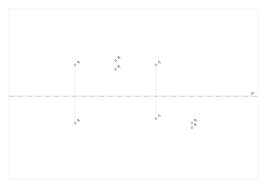
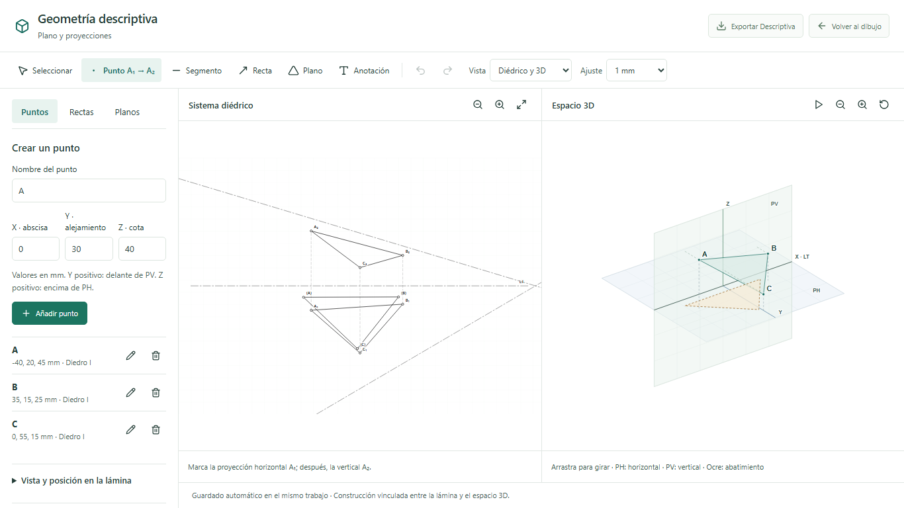
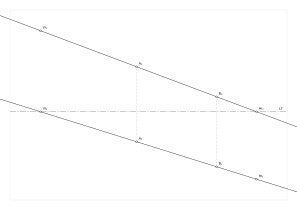
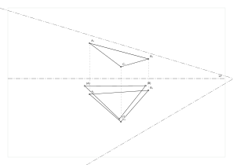

Un punto en cada diedro
Explora cómo los signos de la cota y del alejamiento cambian la posición de A₁ y A₂ respecto a la línea de tierra.
Descargar ejemplo editableConstruye con precisión, comprende las proyecciones y prepara tus ejercicios en una misma mesa de dibujo.
Regla, compás, escuadras y geometría descriptiva. Tus trabajos se guardan en tu equipo y puedes seguir trabajando sin internet.
Conoce tu mesa de dibujo
Windows 10 y 11 · 64 bits (x64). El instalador completo incluye WebView2. No necesitas una cuenta ni una clave de API para usar GeoTrazo.
¿Ya tienes la copia con actualizaciones? Abre Buscar actualizaciones en el programa y aplica la mejora con Guardar y reiniciar.
Las actualizaciones tienen firma de integridad. La firma de editor de Windows está pendiente de un certificado; Windows puede mostrar «Editor desconocido».
Estos archivos contienen construcciones reales de GeoTrazo. Ábrelos con Abrir o Ctrl+O y cambia sus coordenadas desde Descriptiva. Requieren el paquete 0.8.4 o posterior.

Explora cómo los signos de la cota y del alejamiento cambian la posición de A₁ y A₂ respecto a la línea de tierra.
Descargar ejemplo editable
Dos puntos definen la recta. Observa sus intersecciones con PH y PV y comprueba qué ocurre al modificar las coordenadas.
Descargar ejemplo editable
Un plano por tres puntos, sus trazas y el abatimiento sobre PH. Los puntos (A), (B) y (C) conservan las distancias del triángulo espacial.
Descargar ejemplo editableInstalación, instrumentos, geometría descriptiva, guardado y exportación explicados con los nombres que verás en el programa.
Leer el manualGuardar la guía sin conexión